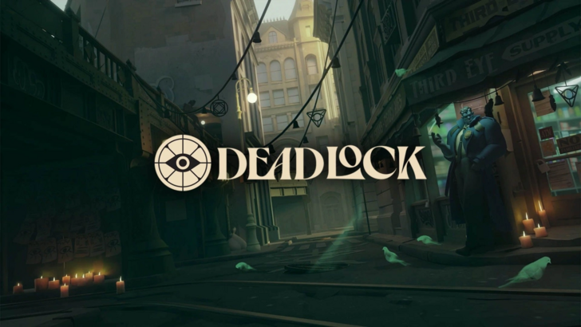

Valve's Newly Announced Deadlock Hits Peak of Near 90k Players
Valve formally revealed Deadlock over the last weekend, and its closed beta hit a new peak of concurrent players not long after. The surprise MOBA shooter has 89,203 players at time of writing. It's just over double the original peak of 44,512 players in August 16.
Deadlock's existence has been known for some time, but Valve was insistent on keeping it secret up to this point. That move drew controversy after The Verge wrote about its time with the beta, and banned writer Sean Hollister after bypassing the prompt to not speak on the beta and talking about it.
For those curious, the current Deadlock peak is just above the 24-hour peak for Valve's older multiplayer titles like Team Fortress 2 (71,863 players) and Left 4 Dead 2 (27,904 players), plus the all-time peak for the first Left 4 Dead (30,616 players). Notably, it's also the first wholly new project from Valve in some time, and its newest title after last year's Counter-Strike 2 and Half-Life Alyx in 2020.
At time of writing, Deadlock is limited to playtesters and whoever they invite. It's unclear when Valve will release a wider, more open beta, or what other platforms the eventual, no-longer-secretive game will be for.